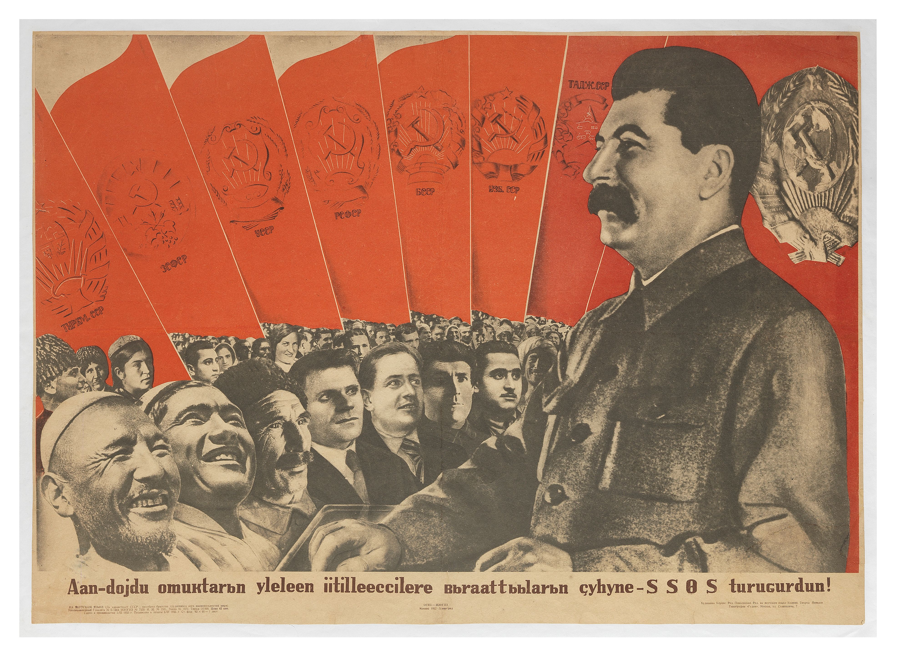
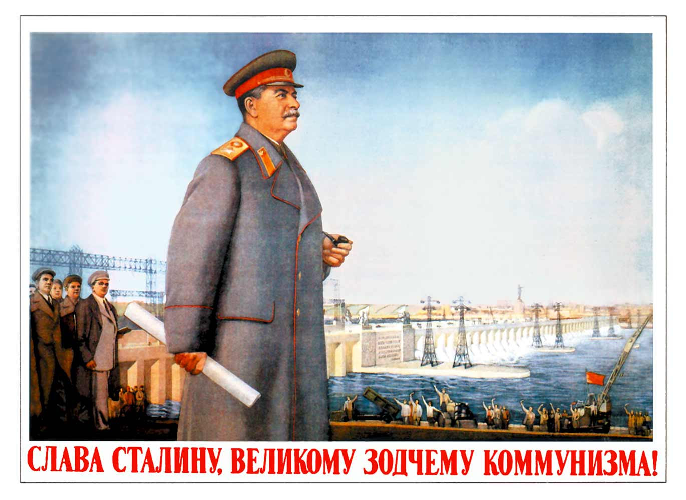

Socialist Realism
Art as State Ideology, 1932–1988
Socialist Realism
was the officially mandated art style of the Soviet Union — decreed by Stalin in 1932 and enforced until the USSR's collapse. All art — painting, sculpture, literature, film, and music — was required to be accessible, optimistic, and politically useful.
Partiinost'
Party-mindedness — art must serve Communist ideology
Ideinost'
Ideological content — uplifting messages, no criticism
Narodnost'
Accessibility to the masses — clear, figurative style
Klassovost'
Class consciousness — workers, soldiers, and leaders as heroes
⚠ Failure to conform was not merely career-ending — it could be fatal.
The Canonized Leader
- Isaak Brodsky, Lenin in Smolny, 1930
- Painted six years after Lenin's death — a deliberate act of secular canonization
- Lenin shown working alone, in humble surroundings — no Tsarist pomp, no personal glory
- Reproduced in millions of copies and displayed in schools, offices, and government buildings across the USSR
- Described as "almost photographic" — reality as Socialist Realism demanded it to appear

Brodsky · Lenin in Smolny · 1930 · Public Domain · Wikimedia Commons
The New Soviet Man and Woman

Soviet Pavilion · Paris World Exposition · 1937 · Public Domain · Wikimedia Commons
- Vera Mukhina, Worker and Kolkhoz Woman, 1937
- 24.5-meter stainless steel sculpture — first unveiled at the Paris World's Fair, 1937
- A male proletarian and female collective farmer thrust the hammer and sickle skyward together
- The most iconic symbol of Soviet power — appeared on the Mosfilm studio logo used in every Soviet film
- Embodied the state ideal of unified working-class heroism — gender equality in service of the collective
The Promised Future
- Yuri Pimenov, New Moscow, 1937
- A woman drives an open convertible through a transformed, modern Moscow — skyscrapers, trams, wide boulevards
- Painted in 1937 — the same year as Stalin's Great Terror, when up to 1.2 million were executed or sent to the Gulag
- The female driver symbolized women's liberation and socialist progress — a powerful propaganda image for a society under violent repression
- Won the gold medal at the Paris World Exposition, 1937 — the state's international showcase

Pimenov · New Moscow · 1937 · Public Domain · Wikimedia Commons
The Poster as Weapon

"Long Live the USSR!" · 1935 · Public Domain · Wikimedia Commons
- Heroic workers of all Soviet nationalities united — the collective over the individual
- Lenin and Stalin elevated above the masses — secular icons, not politicians
- Bold figurative style, no abstraction — accessible to any Soviet citizen

"Glory to Stalin, Great Architect of Communism" · c. 1951 · Public Domain
- Stalin colossal in scale before a hydroelectric dam — leader as cult of personality and builder of the industrial future
- Workers and engineers gaze upward adoringly — the masses as grateful witnesses, not agents
- Fully painted and photorealistic — unambiguous Socialist Realism, no abstraction
Both posters follow the four Socialist Realist mandates: party-minded, ideologically correct, accessible to the masses, and class-conscious.